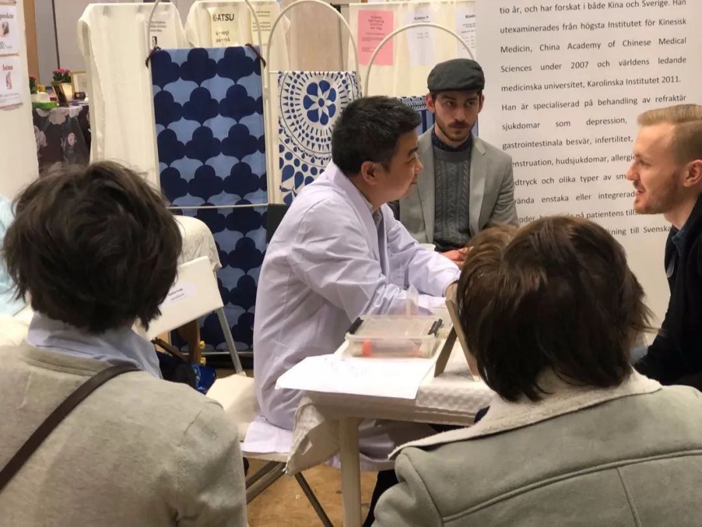
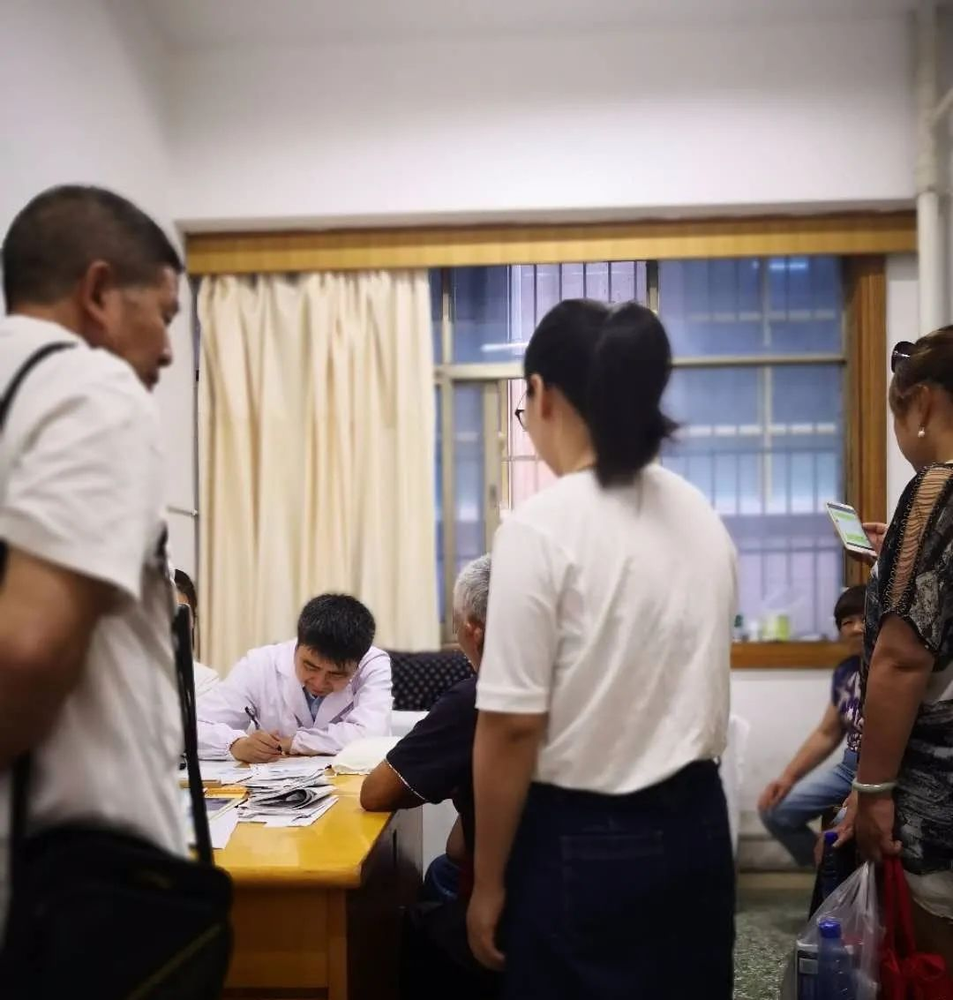
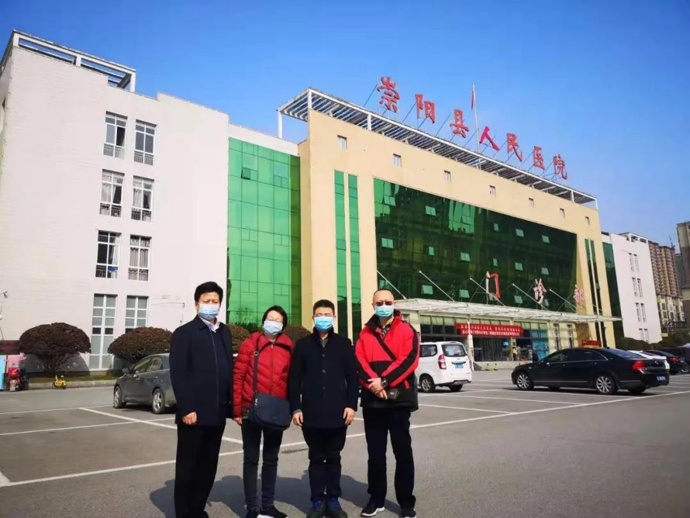
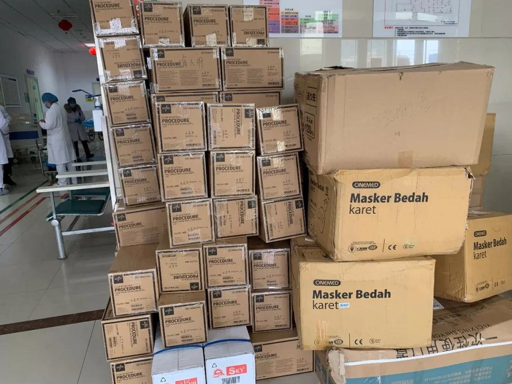

口述 | 公益人周健：怎样更实在地帮助抗疫中的英雄们
原文链接 备份链接 做公益，只凭“鸡血”“热情”，这是不行的。 口述 | 周健（北京感恩公益基金会理事长） 整理 | 王煜 这些天以来，许多事情让我非常揪心。 湖南衡山县的乡镇医生宋英杰，连续十几天在抗疫岗位上工作，过劳去世，因公殉职时 …

当人们摘下口罩的那一天，我也会脱下防护服，与家人团聚，与亲朋举杯。
口述 | 王维武
整理 | 应 琛
今年春节，注定与众不同。
2020年2月13日，是我在咸宁市抗疫医疗专家组援助的第16天。当晚，我终于和三姐王淑红见上了一面。她是湖北省咸宁市公安局警令部政委，从新冠肺炎疫情爆发之初，同样也投入到繁忙的抗疫工作中。

王维武在病房了解患者病情
就在我们医务人员统一入住的宾馆门口，三姐朝我直奔过来，我下意识地连退几步，对她摆摆手，示意她不要靠近。因为这里住的都是外来援助的医护人员，每天出入医院，离得太近不安全。在昏黄的路灯下，三姐仔细询问了我的工作近况，当我无意中说漏嘴表示，每天只是戴着口罩穿梭于各大医院，并没有其他防护装备时，三姐的泪水一下就止不住地流了下来。
01
我叫王维武，湖北咸宁市崇阳县人。先后在中国中医科学院、瑞典卡罗琳斯卡医学院取得博士学位并从事博士后研究工作，之后我多年定居瑞典，从事医疗及科研工作，很多年都没有回国过年了。

在国外给老外看病
前些年，家中遇到些变故，为了照顾母亲，我要求自己每年必须定期回国。在国内，我在湖南中医药大学第一附属医院出诊。因为长沙离咸宁不远，每次回国，我一定会接母亲来长沙同住，以尽孝道。

在国内出诊时
今年是母亲80大寿，很早我们兄弟姐妹就相约小年夜在县城老家团聚。不料突如其来的疫情，让所有的计划都成泡影。很快城封了，路也封了，交通开始管制。三姐也在第一时间投入到工作中，她每天忙着各种指令的上传下达，审核着各类信息数据的收集上报，巡查社会面的治安情况，非常劳累。

王维武（前排右一）与家人合影
身为一名医生，我不可能坐在家中袖手旁观，于是就在微信群里问三姐：“现在封路了，我还有什么办法可以出行吗？”三姐立即明白了我的意思，但她舍不得我去冒险，便断然拒绝了我：“没有任何办法，你就安安心心在家陪母亲吧！”
心急如焚的我却意外接到了市领导的电话。原来有一则关于我的微信推送引起了市委领导的注意，得知我是咸宁人后就与我取得了联系。于是，1月27日，我主动向领导请缨，加入抗疫医疗专家组。在与专家组组长、华中科技大学同济医学院杜光教授碰头后，我们一拍即合。
然而，刚开始知道这个消息时，家人对我的选择并不支持，尤其是我的母亲坚决不同意。我花了一整晚的时间反复给老太太做思想工作。其间，母亲几度流泪让我非常纠结。自从10岁父亲去世后，是她一个人将我们五个兄弟姐妹拉扯大，我又是她最疼的小儿子，她的不舍与纠结我非常理解。
当时我对她说：“如果咸宁的疫情真的爆发，我们这个小家也不可能独善其身。虽然看起来危险，但我有这个信心一定能够把安全防护做到位，您不用为我担心。”最后，母亲是哭着同意的。

王维武（右二）与专家组组长华中科技大学同济医学院的杜光教授、昆医附二重症医学科主任王刚，云南省第二医院的邓毅书副院长合影
1月29日，我正式加入咸宁市的抗疫医疗专家组。临行前，三姐不甘心地问：“弟，你一定要去吗？你不是订了去美国的机票，接下来不是还要去哈佛访学的吗？”见我态度坚定，三姐便不再多言。
02
加入专家组之后，我们每天出行的时间并不固定。24小时待命，只要有什么情况发生，我们就要马上出发。每天的事情都非常多，安排也相当紧凑。

专家组到通城县指导工作时，通城县委书记熊亚平同志给专家组介绍通城的防疫情况
我们的主要工作是下到咸宁市的各个区县，在当地医院进行巡诊，如果遇到疑难病症，还要对其进行会诊。同时，对于新开辟的即将收治新冠肺炎的医疗定点机构，我们也会到实地去检查，看它的设施、条件到不到位，符不符合要求。此外，对那些已经作为医疗定点机构的医院，我们也要检查其发热门诊、隔离病房的设施规不规范，相应的防护和消杀措施是否到位等。
1月31日，我主持了一个危重症患者的会诊，印象非常深刻。他是一个65岁的男性患者，当时病情已经很凶险，CT拍下来有“白肺”，血氧饱和度也比较低，已经出现了发热、胸闷、呼吸困难等症状。经过反复的专家组讨论，最后除了常规的一些抢救方法以外，我利用了自己“中西医双修”的背景，开了一些有针对性的中药方剂。值得高兴的是，这名患者经过我们专家针对性的治疗后，目前已经痊愈出院。

专家会诊
一般情况下，我们会控制进入病房会诊的专家人数，因为一线的医疗物资是非常紧缺的，为了节约防护资源，我们会采取线上、线下远程等多种方式开展会诊工作。

王维武在重症病房给患者把脉
但中医讲究望闻问切，脉象和舌象通过影像是传不出来的。因此，有时候，我也会与医院其他专家深入重症病房查房。每次进入病区，我们就要做好三级防护。而且为了不浪费隔离服，我每次进入病区的时间不低于两小时。最长的一次，我进去了大约4个半小时，其间不能吃、不能喝、不能拉，感觉汗像油一样流下来，全身湿透且粘腻，一线医护人员的辛苦由此可想而知。
其实，专家组有时也会到崇阳县检查工作，而我母亲就住在崇阳县人民医院旁边。当时专家组的同仁体贴我，建议我回去看望一下母亲，但我考虑到自己天天在发热门诊和隔离病房这样的高危地带活动，且母亲年事已高，虽然很想念她，但经过深思熟虑最终还是没有去。这样的情况发生了三次。
当然，有空的时候，我也会给母亲打电话，但不一定每天都有时间。因为有时从医院结束一天的工作回到宾馆已经晚上11点多了，母亲早已经入睡。

除了在抗疫一线，王维武还利用自己在国内外的号召力筹款筹物资。图为捐给崇阳县人民医院的物资
作为一名医生，我将继续坚与病毒做斗争。当人们摘下口罩的那一天，我也会脱下防护服，与家人团聚，与亲朋举杯。

征集令
《新民周刊》现面向全国征集新冠肺炎采访对象和真实故事：
如果你是参与抗击新冠肺炎疫情的医护人员或其家属，我们希望聆听你的“战疫”故事，也希望传达你的诉求。
如果你是确诊、疑似患者本人或家属，我们希望了解你和家人如何“抗疫”的过程，让外界了解你的真实经历。
如果你是疫情严重地区的普通市民，我们希望展现你的乐观，并倾听你所需的帮助。
如果你是公共服务人员或各类捐助者，我们希望看到你的“最美逆行”，记录下你的无私。
……
抗击新冠肺炎疫情，我们诚征对疫情了解的社会各界人士，提供相关线索，说出你的故事，让我们用新闻留存这一切。
《新民周刊》新冠肺炎线索征集值班编辑联系方式（添加时请简要自我介绍）：
周一：应 琛 微信号：paulineying0127
周二：金 姬 微信号：gepetta
周三：黄 祺 微信号：shewen-2020
周四：周 洁 微信号：asyouasyou
周五：孔冰欣 微信号：kbx875055141
周六：吴 雪 微信号：shyshine1105
周日：姜浩峰 微信号：jianggeladandong
✳如你需要捐赠物资，可与以下两位工作人员联系:王勇：WangYong-SH 吴轶君：rommy150708（添加时请注明“捐物资”，方便工作人员快速通过您的申请，谢谢。）
新闻是历史的底稿，你们是历史的见证者。期待你的故事、你的线索！

▼
大家还都在看这些
▼
新民周刊所有平台稿件， 未经正式授权
一律不得转载、出版、改编或进行
与新民周刊版权相关的其他行为，违者必究


原文链接 备份链接 做公益，只凭“鸡血”“热情”，这是不行的。 口述 | 周健（北京感恩公益基金会理事长） 整理 | 王煜 这些天以来，许多事情让我非常揪心。 湖南衡山县的乡镇医生宋英杰，连续十几天在抗疫岗位上工作，过劳去世，因公殉职时 …
原文链接 备份链接 顶住开市压力，A股在大跌后逐渐修复，沪指重回3000点，创业板创下新高。未来中国的经济增长靠什么？不是靠短期的货币政策、财政政策，而是消费升级与产业升级，A股已然掀起科技热潮 文 |《财经》 …
原文链接 备份链接 很多时候，流调人员不像医生，患者会主动尽可能多地给医生提供有用信息。流调人员说，希望市民在经历过疫情之后，能够了解到流调的重要性，为他们将来的工作提供更多便利。 记者 | 应 琛 当大家对新冠肺炎“零号病人”议论纷纷之 …
原文链接 备份链接 从2月7日到现在，一方面大家的活动越来越丰富，另一方面由于轻症患者比较多，人们病情都慢慢恢复。所以，我看到每个人脸上的笑容都变多了。 口述 | 余 毅 整理 | 王仲昀 这一个月终于要过去了。 2月21日上午，在等待几 …
原文链接 备份链接 一些患者出院后，复查核酸检测结果又呈阳性，还有的肺部阴影加重。 这些患者不仅自身症状反复，还可能成为新的传染源。 问题的根源，是这些患者并未真正治愈就出院。出院标准在制定和执行层面，都还有完善空间。 有专家正在 …